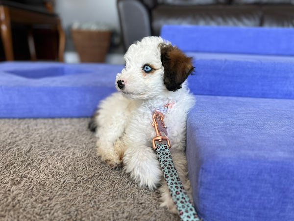

Premium Midwest Doodle Puppies - Home-Raised Bernedoodles & Aussiedoodles
Connecting Families with Healthy, Well-Socialized Doodles
At Doodle Dandy, we're passionate about connecting families with healthy, happy, and well-socialized Doodles. We lovingly raise every puppy in our home, ensuring they thrive in a nurturing, kennel-free environment. Discover the joy and loyalty these smart companions bring!
Your Trusted Aussiedoodle & Bernedoodle Breeder in the Midwest
Serving families across the Midwest, Doodle Dandy is your trusted source for premium Aussiedoodle and Bernedoodle puppies. With over 40 years of dog breeding experience, we specialize in raising healthy, well-socialized doodles with exceptional temperaments that make perfect family companions.
At Doodle Dandy, we're passionate about breeding exceptional Aussiedoodle and Bernedoodle puppies across the Midwest. As a dedicated doodle breeder with over 40 years of experience, we focus exclusively on these two incredible breeds, allowing us to perfect our breeding program and provide unmatched expertise to our puppy families.
Looking for Aussiedoodle puppies, Bernedoodle puppies, or doodle puppies? Doodle Dandy offers healthy, well-socialized Aussiedoodle puppies and Bernedoodle puppies raised in a home environment—perfect for families searching for top-quality doodle puppies across the Midwest (including the Ozarks and Springfield).
Our Aussiedoodles combine the intelligence and energy of the Australian Shepherd with the hypoallergenic, non-shedding coat of the Poodle, creating the perfect active family companion. Our Bernedoodles blend the gentle, loyal nature of the Bernese Mountain Dog with the smart, trainable Poodle, resulting in a loving, family-oriented companion with minimal shedding.
🏡 Home-Raised Excellence
- Raised in our colorful zen den play area
- Daily socialization and handling
- Exposure to farm sights and sounds
- Early neurological stimulation
- Potty training foundation started
- Sleeping through the night before going home
💚 40+ Years of Experience
- Over four decades of breeding expertise
- Health tested parent dogs
- Comprehensive health guarantees
- Age-appropriate vaccinations
- Regular deworming protocol
- Lifetime breeder support
🌟 Our Breeding Philosophy
As an Aussiedoodle and Bernedoodle breeder in Springfield with over 40 years of experience, we believe in quality over quantity. Every litter is carefully planned with the goal of producing puppies with exceptional temperaments, sound health, and the wonderful doodle personality that families love. We don't just breed dogs – we create lifelong family members.
Our parent dogs are carefully selected not only for their health and genetic testing but also for their wonderful temperaments and proven lineage. This attention to detail ensures that every Doodle Dandy puppy has the best possible start in life.
📍 Serving Springfield and the Ozarks Region
Located in Springfield, Missouri - the heart of the Ozarks - we proudly serve families throughout Southwest Missouri, Northwest Arkansas, and surrounding states. Many of our puppy families travel from across the region to bring home a Doodle Dandy puppy, and we're experienced in making the process smooth whether you're local or traveling from out of state.
🎯 What Makes Our Doodles Special?
Every Doodle Dandy puppy goes home with a foundation in potty training, crate comfort, and socialization. Our puppies are sleeping through the night in their crates with no accidents and are comfortable being loose in the house under supervision before they even leave us. This means less stress for you and a smoother transition for your new family member!
🐕 Aussiedoodles vs. Bernedoodles: Which is Right for You?
Aussiedoodles are perfect for active families who want an intelligent, energetic companion. They excel at activities, training, and are wonderfully loyal. Their medium size makes them versatile for various living situations, and their hypoallergenic coats are perfect for families with allergies.
Bernedoodles are ideal for families seeking a gentle giant with a calm, affectionate temperament. They're incredibly loyal, patient with children, and make excellent therapy and emotional support dogs. Their low-shedding coats combined with their sweet nature make them perfect family companions.
Both breeds share the wonderful traits that make doodles so popular: intelligence, trainability, hypoallergenic coats, and loving personalities. As a specialized Aussiedoodle and Bernedoodle breeder in Springfield, we can help you determine which breed best fits your family's lifestyle and needs.
📍 Springfield, Missouri - Heart of the Ozarks
We're proud to serve the Springfield metro area and families throughout Southwest Missouri, Northwest Arkansas, and surrounding regions. Our home-based breeding program in the beautiful Ozarks provides the perfect environment for raising happy, healthy Aussiedoodle and Bernedoodle puppies.
Service Areas: Springfield MO, Branson, Joplin, Columbia, Jefferson City, Fayetteville AR, Rogers AR, Bentonville, Tulsa OK, and surrounding areas throughout Missouri, Arkansas, Oklahoma, and Kansas
Ready to Find Your Perfect Doodle?
Browse our available Aussiedoodle and Bernedoodle puppies, or check out our upcoming litters to reserve your spot for a future baby!
🎓 Lifetime Support & Training Resources
When you bring home a Doodle Dandy puppy, you're not just getting a dog – you're joining our family. We provide lifetime breeder support and are always just a phone call or email away. We also partner with professional training programs specifically designed for doodles to help you and your puppy succeed together.
Our comprehensive puppy guide covers everything from first-week essentials to long-term care, and we're here to answer questions throughout your dog's entire life. Many of our families come back for second and third puppies – that's how much they love the Doodle Dandy experience!
🌈 The Doodle Dandy Difference
As a Springfield Aussiedoodle and Bernedoodle breeder with over 40 years of experience, we're committed to transparency, education, and exceptional care. We invite our puppy families to see where and how our puppies are raised. Our colorful zen den, home environment, and hands-on socialization program create confident, well-adjusted puppies ready to thrive in their forever homes.
We believe in building relationships with our puppy families that last long after pickup day. Whether you're looking for your first doodle or you're a repeat customer, we're here to make your experience exceptional from start to finish.
Photo Gallery - Our Beloved Puppies Over the Years
Enjoy some of our photos of babies over the years below